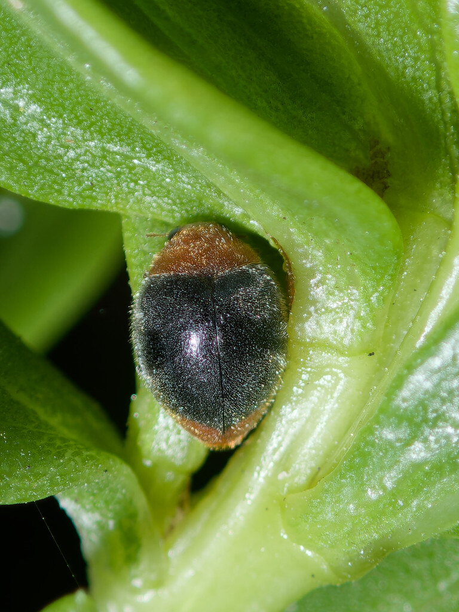

- A small dark ladybird beetle with a rusty-orange head and tail, working over a plant, is a mealybug destroyer — a beetle introduced on purpose to fight a pest.
- It was brought from Australia over a century ago to control mealybugs and scale insects, and it has been doing the job ever since.
- Its larva is a clever disguise artist: covered in white waxy fluff, it looks almost exactly like the mealybugs it eats, hiding in plain sight among them.
- Despite being introduced, it is a welcome helper, not an invader — it sticks to soft scale pests and does not run wild.
Small, oval, dark brown to black with a rusty-orange head and rear end.
Covered in white, waxy filaments — looks like a large, fuzzy mealybug.
Tiny, only a few millimeters long.
Silent.
A small dark beetle with orange ends moving over plants where mealybugs or scale insects gather — or its fuzzy white larva creeping among the pests it mimics. The larva's mealybug disguise is the memorable clue.
Mealybugs and soft scale insects, along with their eggs, eaten by both the adult beetle and the larva.
On plantings affected by mealybugs or scale, especially in the warmer, sheltered parts of the garden. Look for the fuzzy white larva among the pests.
Active in the warm season and year-round in mild, sheltered spots.
Just watch and enjoy — and consider it a friend in the garden. No need to handle it; it does its best work left alone.
- © Brice C. (CC-BY-NC), via iNaturalist